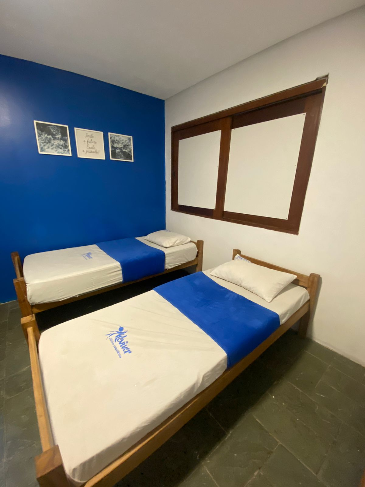
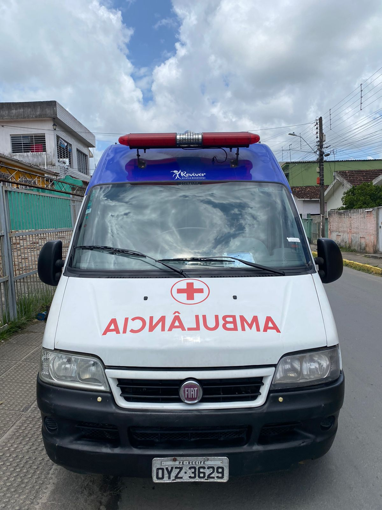
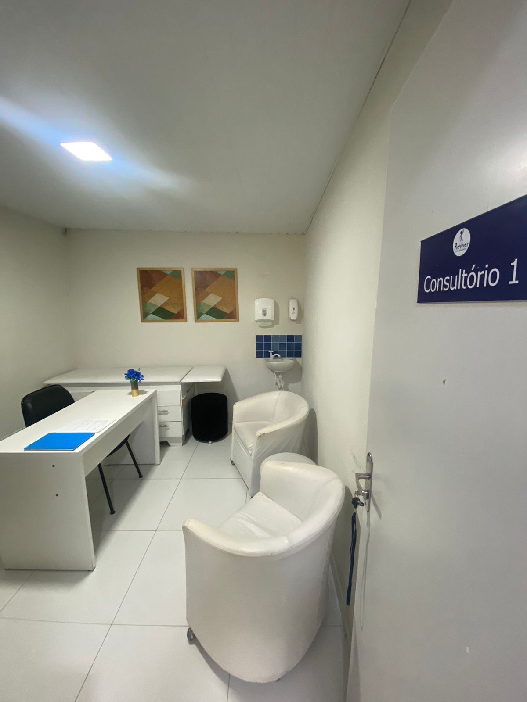
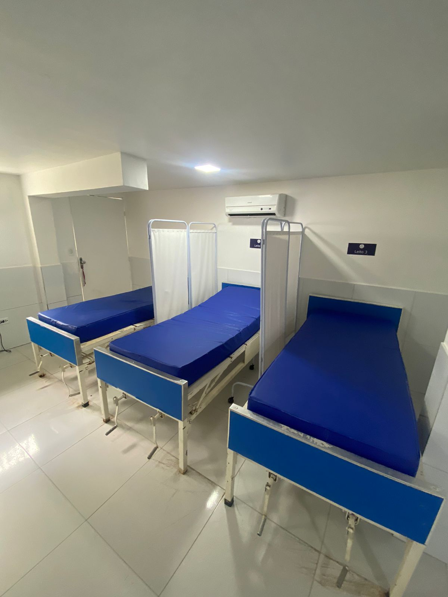
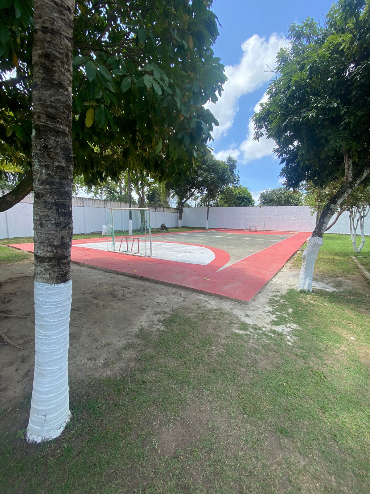
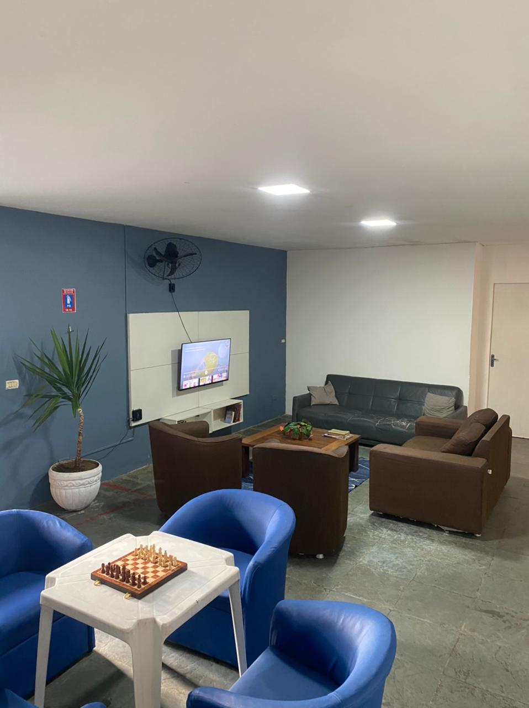
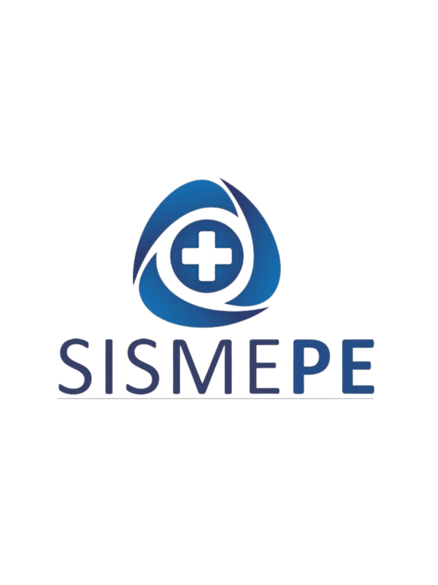
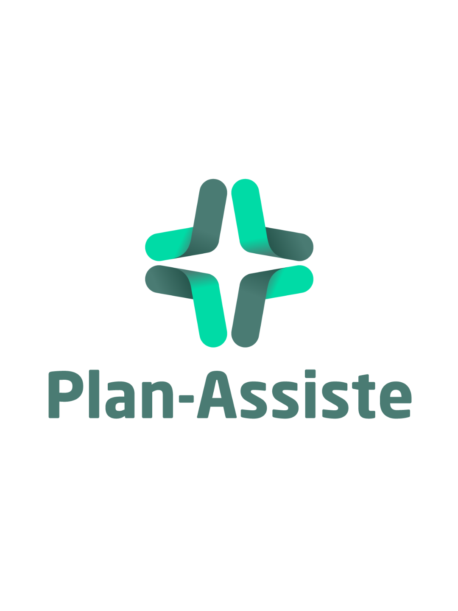
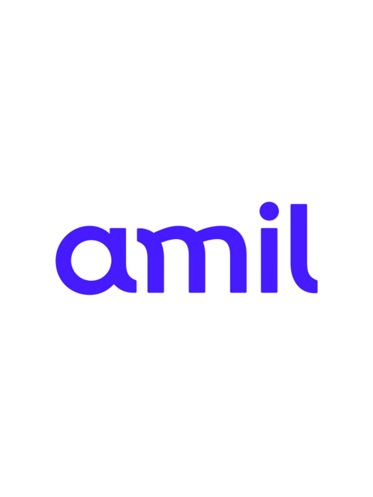

Atendimento especializado 24h para homens
Tratamento psiquiátrico masculino com acolhimento e segurança
Estrutura preparada para momentos delicados, equipe multidisciplinar experiente e condução clínica humanizada para restaurar equilíbrio, dignidade e qualidade de vida.
- Internação com monitoramento contínuo
- Admissão rápida e sigilosa
- Plano terapêutico individualizado
Confiança construída com consistência
Resultados sustentados por experiência clínica e presença contínua
Sobre a clínica
Cuidado integral para homens que precisam de estabilidade, proteção e direção
A Clínica Reviver foi estruturada para oferecer um ambiente seguro, discreto e tecnicamente preparado para o tratamento de transtornos psiquiátricos, dependência química e episódios de crise emocional.
Nosso trabalho une avaliação médica, acompanhamento terapêutico, rotina assistida e intervenção multiprofissional para promover recuperação consistente e reaproximação com a vida cotidiana.
Cuidado integral
Plano terapêutico construído a partir da história, sintomas e necessidades de cada paciente.
Equipe multidisciplinar
Psiquiatras, psicólogos e profissionais de apoio atuando de forma coordenada.
Ambiente seguro
Estrutura pensada para estabilidade clínica, rotina organizada e acolhimento respeitoso.
Tratamentos
Abordagens clínicas para diferentes níveis de sofrimento psíquico
Intervenções planejadas para oferecer segurança, estabilização e continuidade de cuidado.
Depressão
Tratamento para rebaixamento de humor, desesperança, isolamento e perda de funcionalidade.
Ansiedade
Suporte para crises, angústia intensa, insônia, medo persistente e desorganização emocional.
Dependência química
Programa terapêutico com acolhimento, monitoramento e condução clínica durante a recuperação.
Transtornos psiquiátricos
Acompanhamento intensivo para quadros complexos que exigem observação e intervenção especializada.
Diferenciais
Estrutura assistencial desenhada para gerar confiança desde o primeiro contato
Estrutura
Ambientes que comunicam acolhimento, ordem e segurança








Depoimentos
Relatos de quem encontrou suporte no momento certo
convênios


